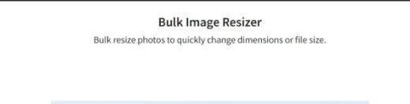
AutomationBulk Image Resizer
High-performance multithreaded image optimization.
View Project →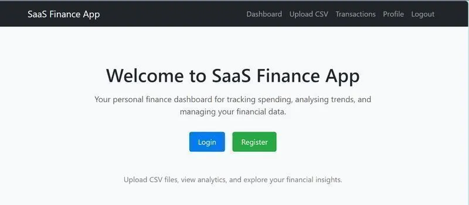
Full StackFinance App
Personal finance analytics with PostgreSQL and Django.
View Project →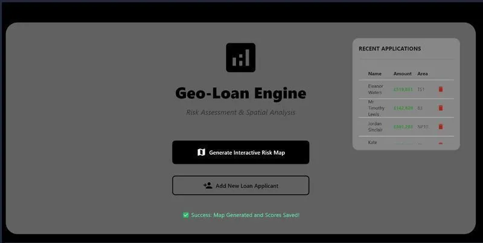
Data ScienceGeo Loan UK Predictor
Financial analytics dashboard for UK loan risk.
View Project →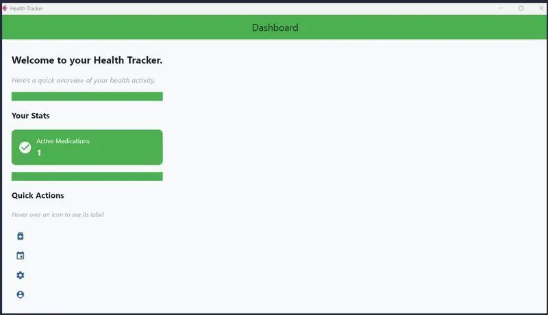
Desktop AppsHealth Tracker App
Flet-based health tracking with SQLite storage.
View Project →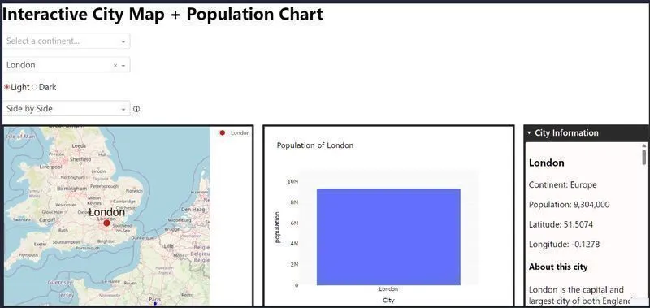
Data ScienceInteractive City Dashboard
Geospatial Dash app with Wikipedia integration.
View Project →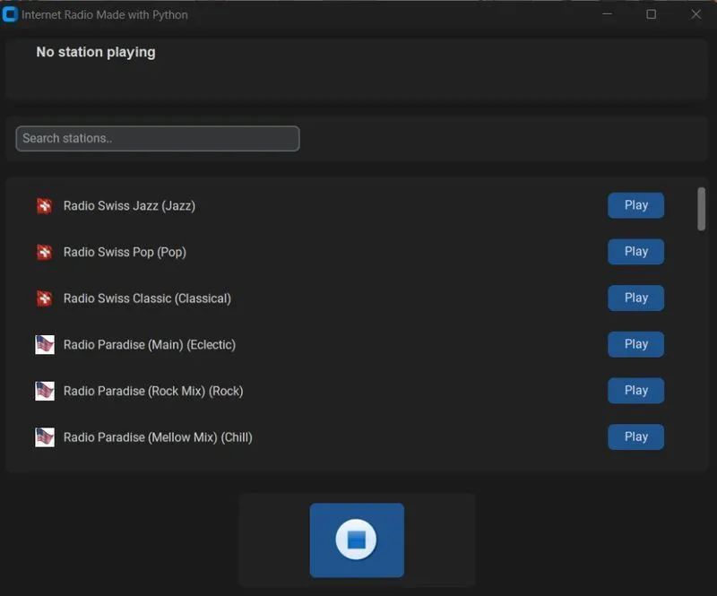
MultimediaInternet Radio Python
CustomTkinter radio app powered by VLC.
View Project →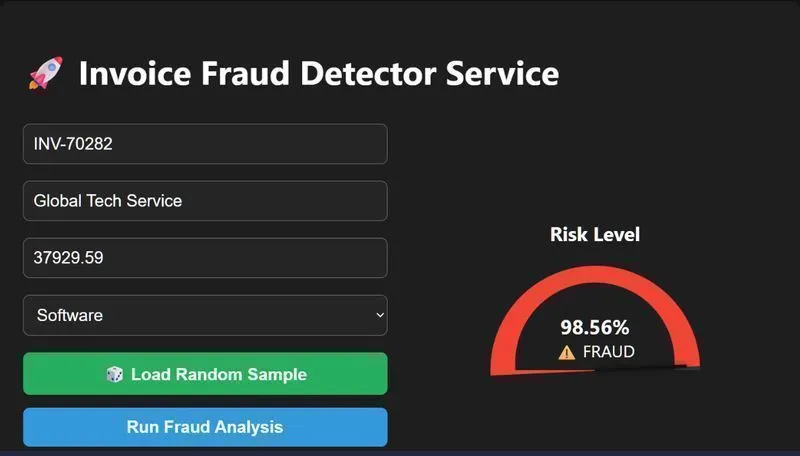
Machine LearningInvoice Fraud Detector
End-to-end ML microservice using XGBoost.
View Project → Automation
Automation
Markdown Auditor
Python utility designed to scan projects for errors in Markdown
View Project → Security
Security
Network Security Scanner
Python utility designed to scan active devices and identify vulnerabilities on a local network
View Project →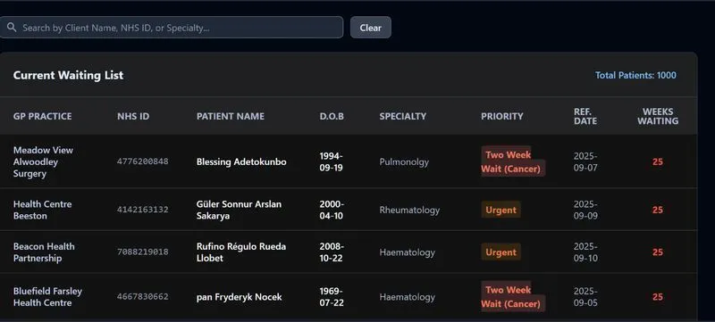
Data ScienceNHS Performance Dashboard
Clinical Intelligence suite using DuckDB.
View Project →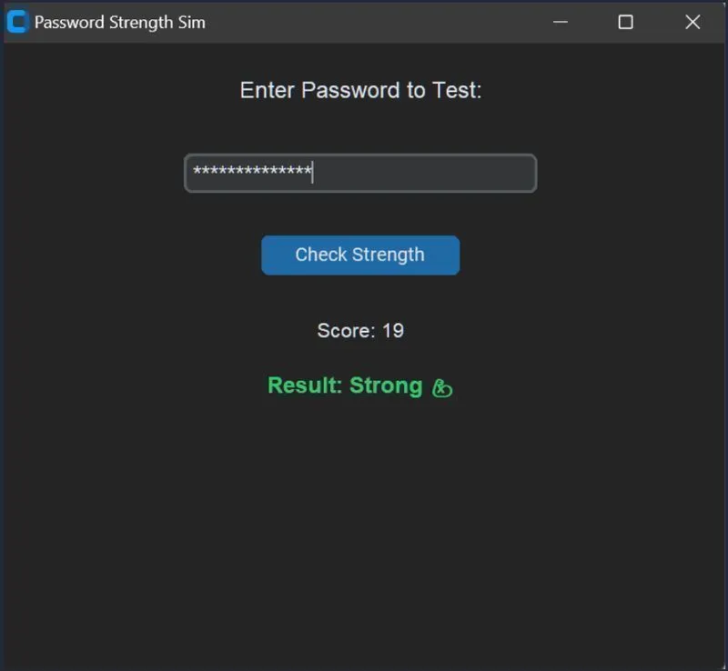
SecurityPassword Strength Sim
Password analysis tool with NumPy and CustomTkinter.
View Project →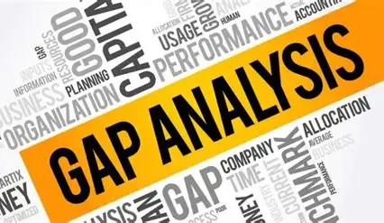
AutomationPatch Gap Auditor
Python utility designed to identify vulnerabilities in a projects dependency tree
View Project →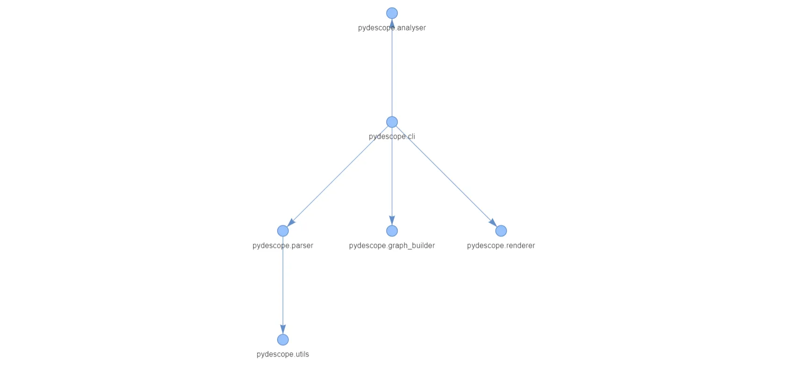
Developer ToolsPydescope
Static analysis tool for Python dependency mapping.
View Project →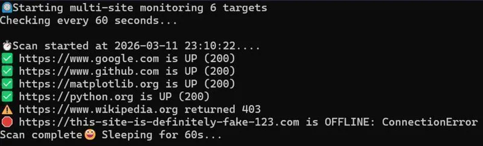
SRE & DevOpsSite Uptime Pinger
Production-ready website monitoring tool.
View Project →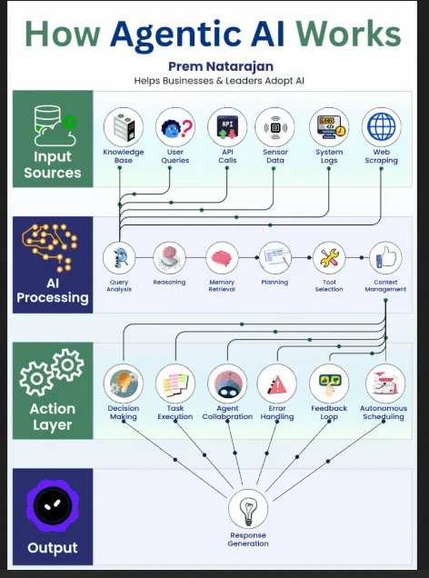
AI & AgentsSmart File Agent
Agentic AI pipeline demonstration in pure Python.
View Project →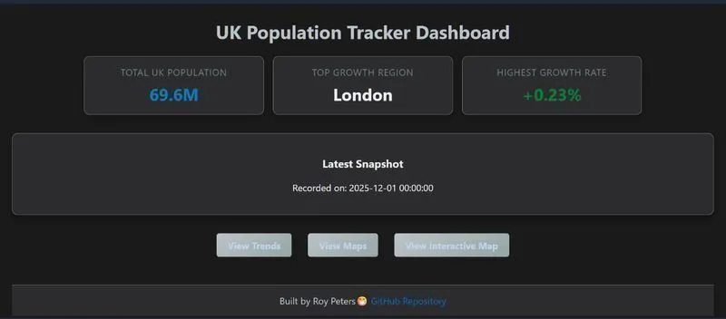
Data EngineeringUK Population Tracker
Full-stack platform with Polars and MongoDB.
View Project →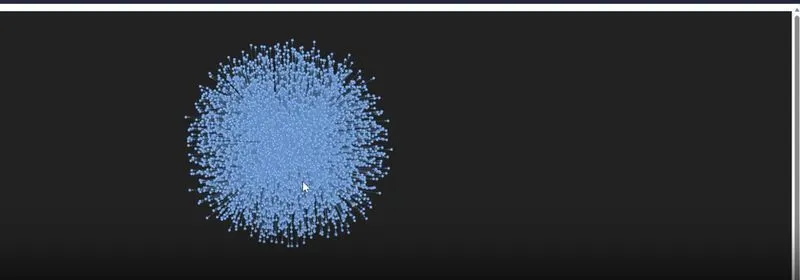
SEO & Network AnalysisWeb Atlas
Transforming Screaming Frog exports into interactive graphs.
View Project →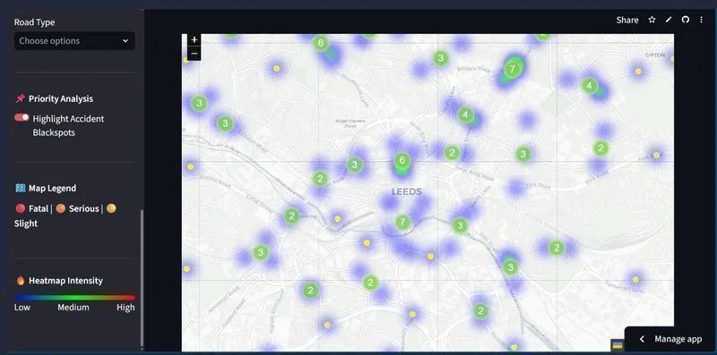
Data EngineeringWest Yorkshire Traffic Analysis
Traffic incident hotspot pipeline and Data Visual tool.
View Project →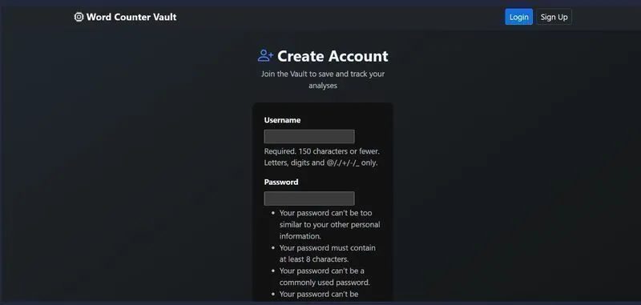
ForensicsWord Counter Vault
Linguistic intelligence suite using Django and DuckDB.
View Project →